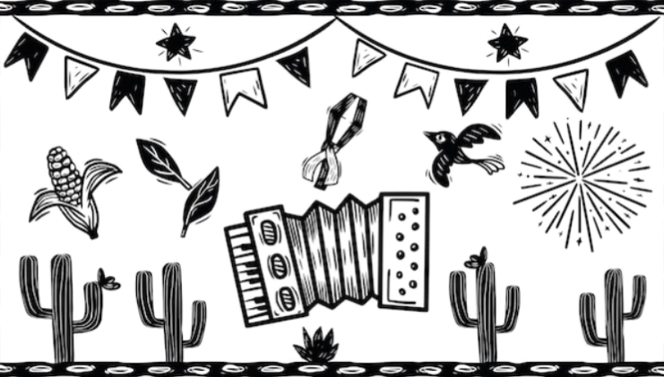

Eventos

Saboreie a culinária nordestina no Dia Nacional do Nordestino. Explore pratos icônicos como acarajé e baião de dois, e descubra a riqueza de sabores que fazem dessa gastronomia uma herança cultural única.